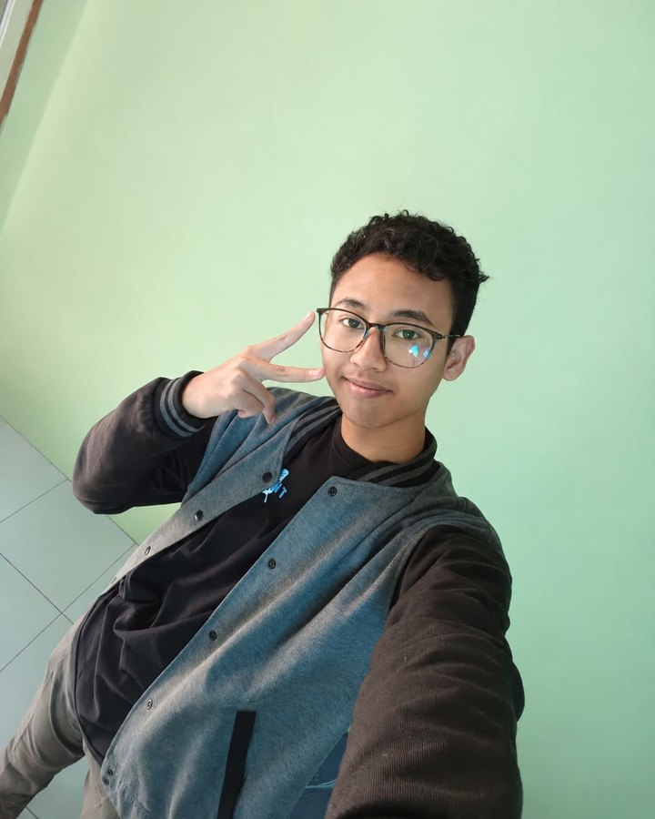

Hi, I’m Naufa.
Informatics Student. Problem Solver. Aspiring Developer.
I’m learning how to turn ideas, algorithms, and curiosity into meaningful digital experiences.
Currently exploring algorithms
Learning Today, Building the Future.
About
Informatics student at UNESA. I like turning algorithms and curiosity into things that run.
I’m Naufa Habibburahman Farros, but most people call me Naufa. I study Informatics Engineering at Universitas Negeri Surabaya, and I’m still early in the journey: building foundations, making things, and fixing them when they break.
Algorithmic problem-solving is where I’m most at home. In 2025 I took first place at OSN Informatika at Kabupaten level, then went on to the East Java provincial round to learn from tougher problems and see where I need to improve.
Right now I’m practicing web development and building a pixel action runner game, while exploring AI and machine learning, mobile apps, cybersecurity, and data. Outside the terminal, anime, music, ARGs, and fantasy worlds shape how I think about stories and interactive experiences.

- Full name
- Naufa Habibburahman Farros
- University
- Universitas Negeri Surabaya (UNESA)
- Study
- Informatics Engineering (Teknik Informatika)
- Right now
- Web development, a pixel action game, and exploring AI, mobile, and security
Skills
Grouped by how I’ve actually used them, so practice and curiosity stay distinct.
Projects
Work I’ve built or am building. Status labels show where each one really stands.
Achievements
What I’ve done so far, and what each one shows about how I learn.
Beyond the Code
Stories and imagined worlds shape how I think about interactive experiences: rooms to explore, systems to learn, choices that matter.
- Anime
- Visual storytelling, character design, and how a scene sets a mood.
- Music
- Sound as another way to build atmosphere.
- ARGs and mysteries
- Stories told through clues and puzzles you piece together.
- Fantasy worlds
- Worldbuilding: maps, factions, rules, and the history behind them.
- Dungeons & Dragons
- Tabletop role-playing, and characters that grow through choices.
- Dark fantasy RPGs
- Dark, moody settings and the stories hiding in them.
Roll for initiative
Tabletop habits, applied to code. Roll a d20, with or without advantage.
Press Roll to see what the dice say.
Intercepted transmission
An ARG-style puzzle. Turn the dial until the signal makes sense.
Fgvyy yrneavat. Fgvyy ohvyqvat.
Hint: the transmission number is a clue.
Learning journey
Where I’m heading next. These are goals, not finished work.
- Build more complete software projects
- Strengthen algorithms and data structures
- Develop web and mobile applications
- Explore AI and machine learning
- Learn more about cybersecurity and data
- Develop more advanced 2D games
- Take part in internships, competitions, research, and collaborative projects
Contact
Have an idea, a project, or an interesting problem to solve? Let’s connect.